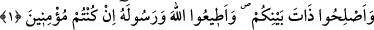

GANÎMETLER
Rahmân ve Rahîm olan Allah’ın adıyla.
1. Sana ganimetlerden soruyorlar. De ki: Ganimetler Allah’a ve Rasûlü’ne aittir.
O halde siz (gerçek) müminler iseniz Allah’tan korkun, aranızı düzeltin, Allah ve
Rasûlü’ne itaat edin.
“Sana ganimetlerden” yani ganîmetlerin hükmünden “soruyorlar.” Ganimetleri
sormaları, ondan bir pay istemek için değil onun hükmünün ne olduğunu öğrenmek
içindi. “Sormak”, sorulan şeyin mânâsını öğrenmek için olduğu gibi mal vesair istemek
mânâsına da gelir.
“ ”, ziyade/fazla demektir. Ganîmet, cihadın ahirette verilecek ecrine ilâve olarak
”, ziyade/fazla demektir. Ganîmet, cihadın ahirette verilecek ecrine ilâve olarak
Allah’ın fazladan bir ihsânıdır. Hem de Allah onu diğer ümmetlere helâl kılmayıp
sadece bu ümmete vermiştir. Onun için ganîmete, “en-nefl” adı verilmiştir. Geçmiş
zamanlarda ganimet elde edildiğinde gökten bir ateş iner ve onu yakıp yok ederdi.
Nâfile namazlar da farzlara ilâveten kılınan namazlardır. Aynı şekilde toruna da nafile
denilmiştir. Çünkü torun, çocuk üzerine bir ziyadeliktir. Devlet reisinin, korkusuzca zor
işleri omuzlayan kimselere, paylarına düşen ganimetten fazla olarak verdiği bahşişlere
de “nafile” denir.
Rivayet edildiğine göre müslümanlar Bedir ganimetlerinin taksimi konusunda ihtilâf
edip Rasûlullah (s.a.v.)’e ganimetlerin nasıl paylaştırılacağını, nerelere sarfedileceğini,
taksimi muhacirlerin mi, ensarın mı, yoksa hepsinin birlikte mi yapacağını sordular.
Bunun üzerine bu âyet nâzil oldu.
Âyet, Bedir’e katılanlar hakkında indiğinden ganimetin hükmü hakkında soranların da
onlar olduğu kesindir. Bu bakımdan soran kimselerin zikredilmesine ihtiyaç
duyulmamıştır.
Mânâ: “Sana ganimetlerin hükmünü soruyorlar, senden fetvâ istiyorlar.” şeklindedir.
“De ki: Ganimetler Allah’a ve Rasûlü’ne aittir.” Ganimetlerin durumu ve hükmü
Allah Teâlâ’ya aittir. Rasûlllah (s.a.v.) de ganîmeti kendisine emredilen şekilde taksim
eder. Başka bir kimsenin bu konuda görüşü geçerli değildir.
Haddâdî demiştir ki: Ganimetlerin Allah’a nisbet edilmesi, ganimetlere şeref
kazandırmak maksadıyladır. Hz. Peygamber’e (a.s.) nisbet edilmesi ise ganimetlerin